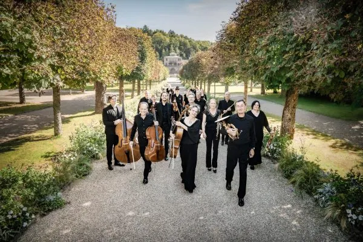

Dit is een testomgeving. De echte pagina staat op
www.nijmegenonline.nl
.
Home
›
Agenda
› Stadthalle Kleve
Evenementen bij Stadthalle Kleve
Lohstätte 7, D-47533 Kleve
Binnenkort
6
nov
“Spurensuche” – Kamerconcert met strijkkwartet
6 nov, 20.00 uur
Stadthalle Kleve
Eerder bij Stadthalle Kleve
22
sep

Paradies – Concert met sopraan en kamerorkest
22 sep 2026
Stadthalle Kleve